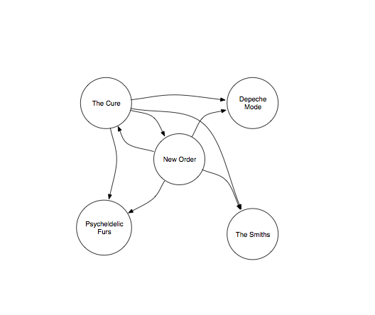
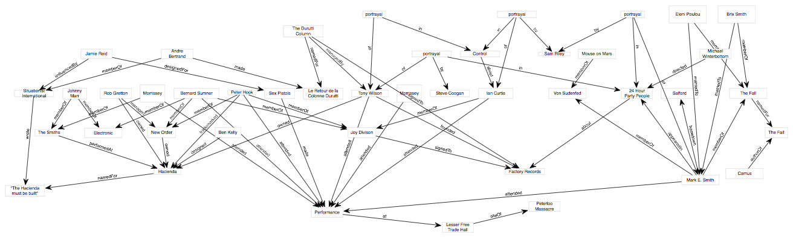
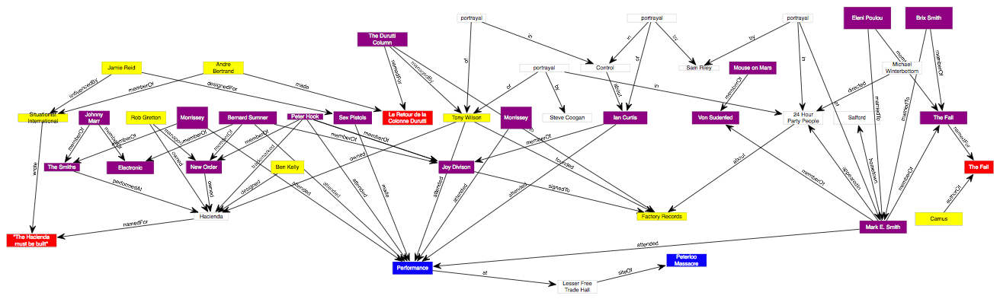

Beyond Music Ontology
Music discovery on the web
Web based music discovery...
- ...tends to be about similarity...
- ...and recommendation
Similarity might be...
- via patterns of consumption / collaborative filtering
- [eg last.fm, Amazon...]
- via musical similarity
- [eg Pandora]
The Music Ontology has extensions to deal with...
...but linked data can also be used to model collaborative consumption...
...add in some URIs to identify tracks...
...and a URI to identify "listen events"...
Similarity / recommendation as a graph
According to Last.fm recommendations New Order are similar to...
...Electronic are similar to...
...Monaco are similar to...
...The Other Two are similar to...
...and Joy Division are similar to...
After spending hours battling OmniGraffle...
We spotted this visualisation on Paul Lamere and Justin Donaldson's slides
We can do the same thing for Pandora recommendations
According to Pandora recommendations New Order are similar to...
...The Cure are similar to...

...Depeche Mode are similar to...
...The Smiths are similar to...
...and The Psychedelic Furs are similar to...
The question is: how interesting is this?
Premise: music denuded of cultural and historical context is uninteresting?!?
Let's play word association...
Sex Pistols: some words I associated earlier
Acid House: some words I associated earlier
Public Enemy: some words I associated earlier
If you tried to explain...
- ...the Sex Pistols...
- ...Acid House...
- ...or Public Enemy...
- ...by referring only to other music concepts...
- ...you'd be missing the point
But remember... you can say anything about music on the web of data
Back to 4th June 1976, Manchester
-->
He writes a music column for The Observer
Unfortunately because it's taken from print it has no links...
...but with links (and with RDFa)?
4th June 1976 (as a graph)

4th June 1976 - cultural

There's more to music than...
- ...patterns of consumption
- ...signals
As Paul Morley says:
Johnny Rotten showed Howard Devoto a way to exploit positively his interest in music, theatre, poetry and philosophy
If everybody...
- MusicBrainz
- the BBC
- Echonest
- last.fm
- Pandora
- Songkick
- Spotify
- every researcher at this conference
- publishes Linked Data...
...together we can build a web-scale database that's greater than the sum of all those parts...
...and begins to describe music in all its rich historical and cultural glory :-)
{kind=link}